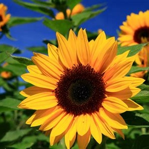

Los girasoles
Los girasoles son plantas anuales que pueden medir tres metros de alto. Los tallos son generalmente erectos e hispidos. La mayoría de las hojas son caulinares, alternas, pecioladas, con base cordiforme y bordes aserrados. La cara inferior es usualmente más o menos hispida, a veces glandulosa y la superior glabra.
